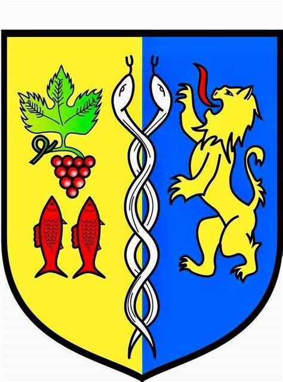
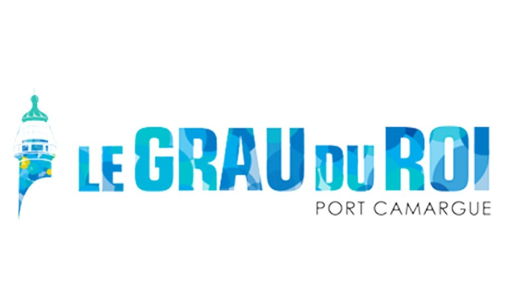

Cursus
En reconversion professionnelle, j'ai obtenu mon baccalauréat en passant un DAEU B option scientifique à l'IUT en 2023/2024.
Cela m'a permis d'intégrer le BTS SIO que je poursuis actuellement depuis septembre 2024.
Formation :
- Bachelor/Licence - Non défini (2026-2027)
-
BTS SIO - MydigitalSchool (2025-2026)

-
BTS SIO - Esicad (2024-2025)

-
DAEU B - IUT Montpellier (2023-2024)

Expérience Professionnelle :
- Technicien en informatique - Stage à la mairie du Grau du Roi (juin 2025)  